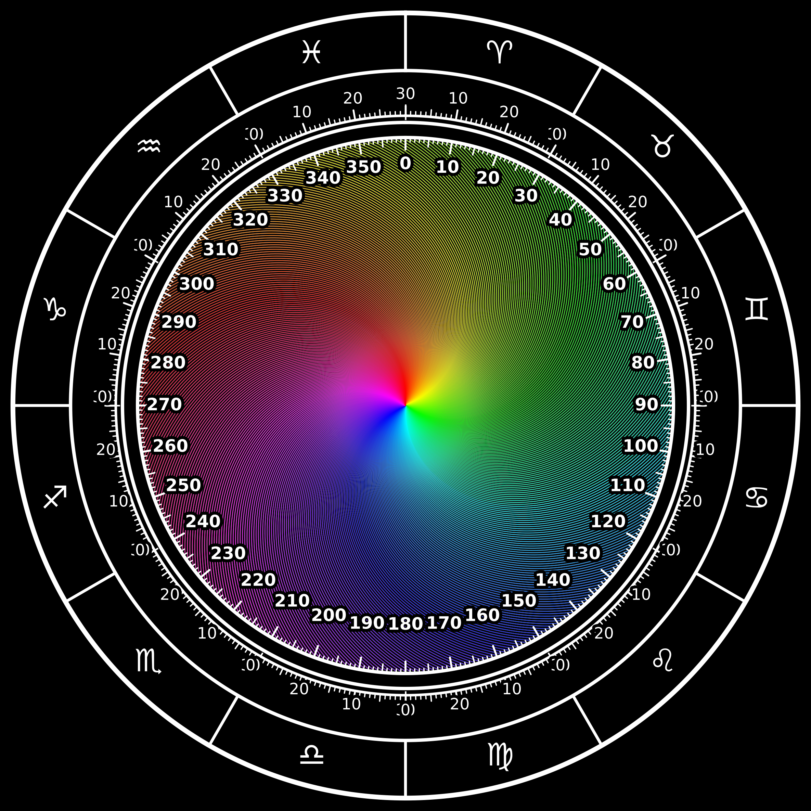

Message
Un texte humain entre dans le système. Il devient la matière première du flux.
Helios Photonix est une architecture numérique expérimentale qui modélise la circulation de l’information sous forme de photons simulés, de degrés, d’arcs colorés, de spirales, de rosaces et de mémoire circulaire.
Le projet construit une maquette conceptuelle, visuelle et algorithmique : un laboratoire pour comprendre comment une information peut être encodée, transmise, synchronisée, corrigée et mémorisée.
Le modèle repose sur une chaîne simple : un message est converti en binaire, le binaire est distribué dans une roue 360°, les photons simulés circulent, puis la mémoire circulaire conserve les traces utiles.
Un texte humain entre dans le système. Il devient la matière première du flux.
Le message est converti en octets UTF-8 puis en bits 0/1.
Chaque paquet est envoyé vers une adresse angulaire. Le cercle devient une carte mémoire.
Les bits deviennent des impulsions lumineuses animées, avec phase, amplitude et direction.
Deux modèles jumeaux échangent les impulsions pour simuler un dialogue informationnel.
Les degrés stimulés gardent une trace. Le système ne repart pas toujours de zéro.
Le laboratoire conserve le principe : deux modèles 360° identiques, échange photonique A ↔ B, mémoire évolutive, correction d’erreurs, synchronisation de phase et visualisation des flux.
Helios Photonix est une simulation logicielle. Elle utilise des concepts inspirés de la physique, de l’informatique et des systèmes dynamiques.
Le message est converti en bits puis projeté dans une géométrie circulaire.
Le laboratoire simule un verrouillage de phase entre deux modèles jumeaux.
Les photons du laboratoire représentent des paquets discrets d’information.
Le prototype simule une logique de bruit et de récupération.
Les degrés fréquemment activés conservent une trace.
Pour aller vers un véritable ordinateur quantique, il faudrait un support physique : qubits, photonique intégrée, portes logiques et mesure.
HeliosAstro apporte la base symbolique et géométrique : roue zodiacale, degrés, arcs, positions, cycles et lecture du vivant.
Le thème astral devient une carte polaire. Chaque planète, signe, aspect ou degré peut être lu comme un point de résonance.

La géométrie sacrée sert ici de langage visuel et structurel. Elle permet de représenter les échelles, les répétitions, les symétries et les cycles du vivant.
Elle représente l’évolution : un flux part du centre, se déploie et transporte l’information.
Elle représente l’organisation : répétition, symétrie, cohérence, mémoire et résonance.
Il représente l’adressage complet : chaque degré devient un point de mémoire ou de transmission.
CHLS9 est présenté comme le jeton expérimental relié à l’écosystème Helios : visualisation, laboratoire photonique, données, communauté et expérimentation DeFi.
Dans cette architecture, CHLS9 n’est pas vendu comme une promesse financière. Il sert de marqueur d’écosystème.
EffrWV33wCbHNXbTJ7T7H5AsfxuXjB7wACHgM6JAGYd6